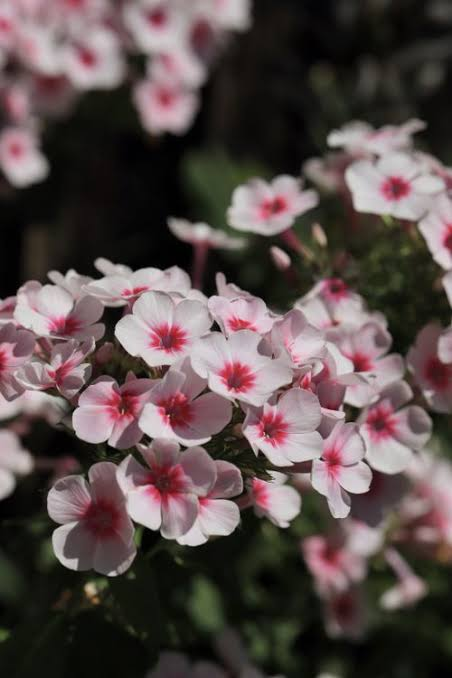

Flowers are the reproductive structures of flowering plants (angiosperms), celebrated worldwide for their striking beauty, vibrant colours, and diverse fragrances. Beyond their essential ecological role in pollination, flowers hold deep cultural significance, serving as symbols of emotion, celebration, and artistic inspiration across human history.